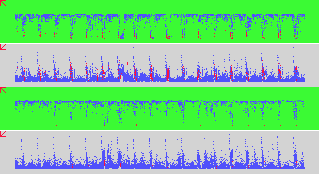

File Server Example

Input Data
The input data:
- are gathered from file server statistics.
- contain attributes: date, time spent in cpu, idle, and user states,
and disk activities.
The input file looks like:
2 -2140595955 782593880(0/6/0.58)(0/17/1.48)(82/100/97.93)[0/205/7.3][0/8/0.18][0/8/0.35][0/8/0.22][0/8/0.18][0/8/0.15]{0/205/8.38}
2 -2140595955 782593941(0/3/0.3)(0/19/1.13)(81/100/98.57)[0/67/3][0/0/0][0/4/0.07][0/4/0.08][0/0/0][0/0/0]{0/67/3.15}
...
Problem
We are trying to see if there is any anomalies between the file servers.
Visualization
click here to see our model of creating visualizations.
The visualization is created as follows:
- Define the two top views for first file server. In the first
view, map date onto X axis, and idle time to Y. In the
second view, map date onto X axis, and disk activity to Y axis.
Map high system activity to red.
- Define the bottom two views the same as the top two, but for
a different sensor.
- Link the X axes of all the views.
- Navigate the views by scrolling or zooming.
Observations
- This example illustrates the ability of DEVise to handle
large amounts of data. About 6 MB of memory buffer is used to
visualize 18 MB of files.
- Cycle in the data: low idle and high disk activity is observed
every night after midnight, during file backup.
- Anomaly observed: The first server contains periods of high system
time, but the second file server does not.